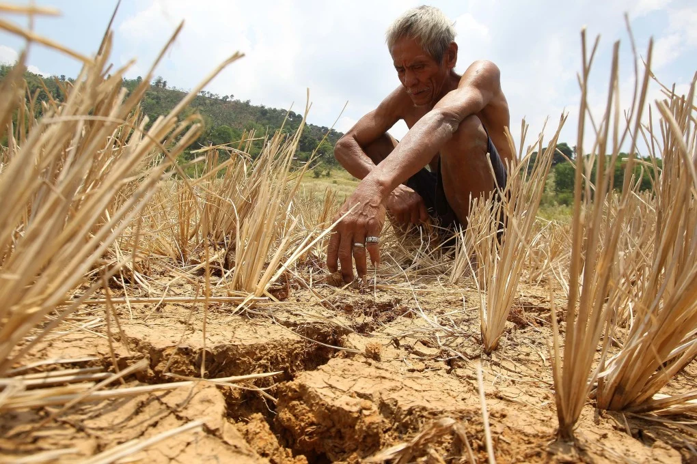
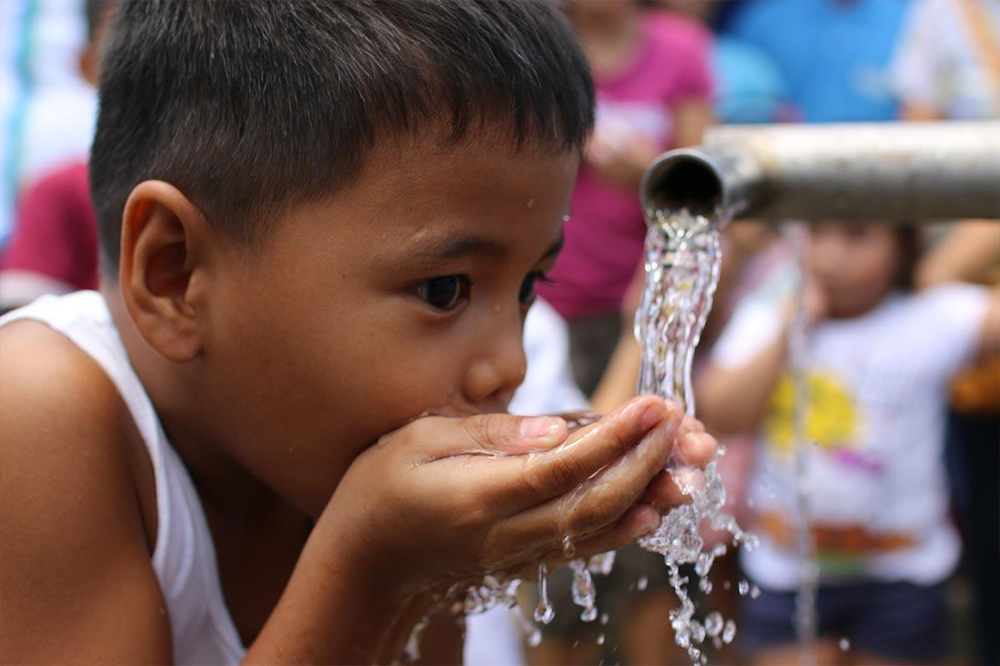

Our Message: Clean Water for Every Filipino
Access to safe water is not a luxury – it is a basic human right. Yet millions in the Philippines still suffer from water insecurity, pollution, and lack of sanitation. We advocate for immediate, sustainable, and community‑led solutions.
7 Major Water Problems in the Philippines
- 1. Contaminated groundwater: Heavy metals and bacteria from improper waste disposal.
- 2. Unsafe drinking water in rural areas: 1 in 10 Filipinos rely on unsafe sources.
- 3. Water pollution from factories and mines: Rivers like Pasig and Marilao are heavily polluted.
- 4. Inadequate sewage and sanitation: Only ~10% of households are connected to sewerage systems.
- 5. Seasonal water scarcity: El Niño causes severe droughts in parts of Luzon and Mindanao.
- 6. Plastic waste choking waterways: Philippines is one of the top ocean plastic polluters.
- 7. Poor water governance: Leaking pipes, corruption, and lack of data transparency.
The Reality of Water Crisis
 Polluted river |
 Water scarcity |
 Clean water |